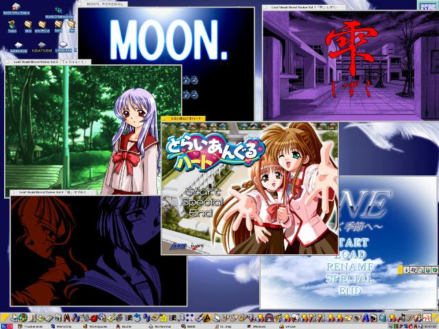

| a す〜ぱ〜まん。 |
■ What's new スクリーンショットと近況（2001/2/28）。
スクリーンショットだけ（汗（2001/2/17）。
近況を更新（2001/2/8）。
「jless-332-iso248(ppc)」「jgroff-1.10(0.99)(x86/ppc)」「man-1.5g-ja(x86/ppc)」を公開（jgroffのx86版は修正版）（2001/2/3）。
Richard Burgessさんが移植したcronをR5で動くように修正したソース・バイナリを公開します（2001/2/2）。
掘り出しモン「groff-1.11+jgroff-0.99」を公開（2001/1/28）。
namazuに対応した!!「mhttpd-0.5.1」を公開（2001/1/25）。
「ICOTranslator」を公開らしー（2001/1/23）。
BeZillaな話し、とか（2001/1/13,2001/1/15）。
「BeYAME version 0.27c β3」を公開！ ですぅ♪（2001/1/7）。
「zmc2 v129 / ZtoM v156」を公開！ ですぅ♪（2001/1/7）。
「mhttpd-0.4.3」を公開！ ですぅ♪（2001/1/7）。
「cvs 1.11+1」を公開！ ですぅ♪（2001/1/7）。
微妙に更新...近々きっと...（2001/1/5）。
微妙に更新（2000/12/7）。
「TwinVQ Player / CL-Amp Plugin version 0.70」を公開！ ですぅ♪（2000/10/28）。
「TwinVQ Player / CL-Amp Plugin α」を公開！ ですぅ♪（2000/10/24）。
「Dos eXecution environment for BeOS /POSIX」を更新だぉ（2000/9/30）。
VideoLAN、ちょっと話題なんでスクリーンショットとして取り上げてみました（2000/8/19）。
「diswin version 0.17」を公開！ ですぅ♪（2000/8/7）
とりあえず「トランスパランス α（2000/08/01）版」公開！ ですぅ♪（2000/8/1）
■ 近況 ◆ サーバーダウンでしくしくな今日このごろですが、いよいよBeaCon4が動き出しました。 win32_serverネタで私も参加予定です。dynamic relocationとか結構うまく動いてるようなんで、 この周辺の技術的な話なんかもできたら面白いかなー、とか。
◆ NScripterと平行して進めてたwin32_serverプロジェクト「ExeCoffSky」が意外に進展。 せっかくなのでどんなもんなのか解説。
っていうか、wineみたいなもんです。 Windowsの実行形式であるPE(COFF)を解釈するライブラリを作って、EXE/DLLを メモリにマップ。Windowsでは、Win32APIは直接呼び出されずに、 外部参照のDLL内で解決されることを利用して、KERNEL32.DLL/USER32.DLL/etc... 等のDLL相当のものをBeOS nativeのAPIを使って再実装。 あとはnativeに動きますんで、動作速度も快適ですし、 CPUがDualなら当然Dualで動きます。
最初はDLLはDLLとして実装しようとして、PEの吐けるgccとか移植したんですが、 逆にDLLからのBeAPIへの参照がうまく行かずに挫折。 soとして実装してWin32のダイナミックリンクをso対応にするってのも手だったんですが、 序数参照の問題もあったので、PEのダイナミックリンクのコードにフックをかけて built-inにする、という安易な方法を取りました(^^;;
で、利点は、
1. WindowsのDLLがBeOSから再利用できる。
2. WindowsのEXEの一部がBeWareとして再利用できる。
ってあたり。 どちらもBeOS上のアプリケーションとして、BeWareと区別なく実行できるのが特徴 （いわゆるエミュのように、中にもう1つ箱ができて、その中で実行する、というわけではない）。
EXEが一部しか対応できないのは、Windowsの実行ファイルが前提としている メモリ空間にBeOS kernelのheapが存在しているためで、 リンク時に再配置情報がstripされているEXEは実行できません。 で、残念ながら最近のやつは全滅。 このあたりがkernelレベルでWin32をサポートするPEACEと比べて弱い点です。 仮想メモリドライバみたいなもんを作ってやれば、将来的には回避できるかもしれません。 それ以外についてはAPIさえ実装してやれば、なんでも動くはずです （と言っても4桁以上あるんで、アレですが）。
#そうそう、まともなプロジェクト名を募集します（笑）。ExeCoffSkyってのも、いかにもアレなんで。 BeOS/Win32/COFF/PE/execution/environment/serverあたりの単語を絡めていろいろ考えてみたんですが、 なかなか良いのが思いつきませんで(^^;;◆ はむ！さんと BeZillaやってます。あと、mozilla/widget/src/beos、mozilla/gfx/src/beos あたりが問題残ってると思われまする。えぇ、ぜひ読んで下さい（うひ。 わからない点があればメールとか、IRCの「#BeOSの話」「#Be日本」あたりにごー。
◆ ってことで、 63640、 65100、 65126、 65131、 65185、 65246、 65425、 65909。
65423と65909がまだcheck inされてない、って風味。あと、Altキー絡みはどうなったけか。
■ こんな感じ ダメなスクリーンショットをぼちぼち掲載。
 らんらららん。過去 : [1] [2] [3] [4] [5] [6] [7] [8] [8a] [9] [10] [11] [12] [13] [14] [15] [16] [17] [18] [19] [20] [21] [22] [23] [24] [25] [26]
■ 自作BeWare 多少は作ってるので、ちょっと紹介します。
BeYAME(x86/ppc) 〜 old version [1999/夏コミ]BeYAME(x86) 〜 new version[2001/1/7]いわゆるエミュレータです。PC-Engine、ファミコン、GameBoyが動きます。 大学のサークルの先輩が作ったものを移植したものです。 他にもWindows版やMacintosh版、X版、PC-FX版、PlayStation版なども存在し、 謎の多いエミュレータです。旧版はBeでの習作ということもあるので、結構手抜きです。 新版はGUIをXMLベースにしてみたりと、いろいろやってます。 mcdrv(link) [2000/5/28]X68000で有名だったCUL.さん作のミュージックドライバを移植したものです。 FM音源をエミュレートします。現在はコマンドラインのみのサポート。 いずれCL-AMPのPlug-inも作りたいなぁ、、、と。 Run68を移植したのでMDXとかもそのうちいけるようになる予定。 PDT Translator(x86) [2000/5/25]うぐぅ、なTranslatorです。すでに何人かの方が作っていたようですが、、、。 PF1 Translator(x86) [2000/5/29]サターン版のプリティサミーとか、Windows版の大運動会とかの画像のTranslatorです。 むしり取った衣笠ってやつですか。 ICO Translator(x86) [2001/1/23]Windowsのiconファイル用っす。ソースも入れようとしてたら忘れてしまいました(^^;; 要望とかバージョンアップがあれば新しいのアップします（うひ。 run68(x86) [2000/5/28]X68000のコマンドラインをエミュレーションします。 mcdrvからMDXなどを演奏する際に活用できます （が、まだBeOS用のmcdrvは対応していない、、、）。 とりあえず公開。 iso9660s(x86) [2000/6/10]BeOS R5標準添付のISO9660ドライバではJoliet以外のCD-ROMで日本語がうまく扱えません。 ということで、ShiftJISに対応させました。sample-codeのiso9660をベースにしています。 NcFTP3.0.1(x86) [2000/6/30]UNIXでメジャーな高機能ftpクライアント、NcFTPの最新版であるv3.0.1の移植です。 コンパイルの合間にいじっていたら、いつの間にやらまともに動くようになってました。 v3系列は移植されていないようですので、パッチと一緒に公開します。 w3m 0.1.10(x86) [2000/7/3]伊藤彰則さん開発によるテキストベースのWWWブラウザ、w3mのBeOS版です。 GCやらfdopen絡みで、結構苦労してます。 まぁ、Mozillaまでの繋ぎですね(^^;; ソースは整備してないのですが連絡を頂ければ送ります。 7/1版にはダウンロードに問題がありました。申し訳ありません。 トランスパランス α（2000/08/01）版(x86) [2000/8/1]BeOS⇔WonderWitch間でデータ転送を行うためのソフト。 とりあえず使えるって状態になったので公開開始します。 適宜更新予定。 cvs-1.11+1(x86) [2001/1/7]CVS最新版です。ソースの差分とインストーラ付き。 mozillaのco/update時などに起きるrmdirの問題に対処しました。 あとはシングルユーザーOS向けのアクセス制御機構の導入とか。 mhttpd-0.5.1(x86) [2001/1/25]CGIの使えるWebServerです。そこそこ遊べます。 アイコンが付きました（意味ない...）。 minibbsとかnamazuもそのまま動きます(^^)。 TwinVQ Player / CL-Amp Plugin version 0.70(x86) [2000/10/28]TwinVQのTerminal用のプレイヤーと、CL-Amp用のinput pluginです。 Linux用のライブラリをBeOSでリンクする実験だったりもします。 α版からの変更点はメモリリークの修正、MIMEのサポート、Shift_JISな曲名の対処です。 lha 1.14f(x86) [2000/5/28]単なるコマンドライン用のlhaです。 探すよりコンパイルするほうが速かったんで、ソースとってきてコンパイルしました。 ほとんど修正なしで通ってます。 zmc2v129(x86) [2001/1/7]Z-MUSICでのMIDI環境ってことで、ZMUSIC Version2.x系列のMMLコンパイラです。 わいやぎさんが開発したものをコンパイルしてみました。詳しくは、わいやぎさんの Z-MUSICをX680x0以外の環境で実現する（フリーソフト）のページへどうぞ。 ZtoMv156(x86) [2001/1/7]Z-MUSICでのMIDI環境第２段ってことで、ZMD to MIDコンバータです。 BeOSではZ-MUSIC Playerが存在しないので、上のやつ単体では意味をなしません。 まぁ、頑張ればmcdrvでZ-MUSICも再生できるんですが(汗)。 どのみち作ったものを世に出すには必須でしょう。これまたわいやぎさん開発。 less-332-iso248(x86/ppc) x86[2000/7/6]
ppc[2001/2/3]一応コンパイルしたのでアップしておきます。 less 332にiso patch 248を適用したものです。 例によってコンパイルしただけなのでUTF-8は考慮されていないのですが、 MuTermを使っていればLESSCHARSET=japanese-jisでそこそこ便利に使えます。 日本語対応のgroffと日本語対応のmanと組み合わせれば日本語manも表示可能。
（2001/7/6 PPC用バイナリを追加）jgroff-1.10-beos(x86/ppc) [2001/2/3]groff-1.10にjgroff-0.99のパッチをあてて、 BeOSでコンパイルできるように手直ししたものです。 いわゆる日本語の通るroffで、日本語man環境に必要です。 export GROFF_TYPESETTER="nippon"としておいて下さい。
（2001/2/2以前のx86版には足りないファイルがありました。 差分 のインストーラを用意しましたので御利用下さい。）man-1.5g-ja(x86/ppc) [2001/2/3]man-1.5g-jaです。これで日本語man環境はx86/ppcともにそろいました(^^)。 diswin-0.17(x86) [2000/8/7]雨がやむまでの時間潰しにサクッとコンパイル。 あると便利なdiswin。これを使って頑張って下さい（笑）＞ＫＴ。 オリジナル版はIKURAさん。 cron-r5(x86) [2001/2/2]Richard Burgessさんが移植したcronをR5に合わせて修正・コンパイルし直したものです。 ソースごと入ってます。
■ Tips � ちょっとした技とか。さっさと書けって感じ。
●GNU makeで並列コンパイル●LZHファイルをExpanderから扱えるようにする方法
■ Libraries 自作のライブラリ群。なるべくBeらしく設計したつもり。
●HTTPを扱うためのライブラリ●新MidiKitでSMF/SoftMIDIを扱うためのライブラリ
■ Beなマシン � 一応、こんなマシンでBeを使ってます、、、ってことで。
●PPC: Power Macintosh 8600/250●x86: 自作 ←元メイン
HD増設した以外、特にいじってありません。 OS8.5とMkLinux、Linux、BeOS 4.5の計4つのOSからブート可能です。 ●x86: Let's note CF-C33
BH-6にCeleron300ってことで、今となっては遅いマシン。 グラフィックはG200とVoodoo2、サウンドはCrystalとYMF744がのってます。 CD-ROM x 1 / DVD-ROM x 1 / CD-R x 1ってことでCDは計3つ。 他には640のMOとUSBのSmartMedia Reader、IF-SEGAとかが繋がってます。 OSはWindows98 / Windows 2000 Server / BeOS 4.5 / BeOS 5 Personal Edition の4つ。 ●x86: Mebius MN-5500
カメラ付きのB5ノートです。BeOS 5 Personal Editionが動いてます。 最初インストールした時はサウンドの調子が悪く、ノイズしかならなかったのですが、 DMAのチャンネルを変えてやったらうまくなりました。 PCMCIAブリッジが正常に認識されていないのでPCカードが使えないのが致命的ですが、、、。 ●x86: 自作 ←メイン
一応Beが動くんですが、Safe-ModeでIDEのDMAを無効にしないと起動しない、画面がモノクロ、 音もならない、、、と踏んだり蹴ったりです。 一時期、まるちなサイトの人が移植したCyberのドライバをこいつにも対応させよう と試みたこともありましたが、挫折しました。
Windows2000との切り替えが面倒なので作ってしまいました。 BeOS専用マシン。PentiumIIIの新コア650MHzのデュアルです。 G400、SBLive。FDが付いてないのが味噌。HDは30GすべてBe。 漢！
CVS 最終更新 ---- $Id: index.html,v 1.90 2001/03/05 15:42:27 toyoshim Exp $since 2000/6/3

{kind=link}
{kind=link}
{kind=link}
{kind=link}
{kind=link}
{kind=link}
{kind=link}
{kind=link}
{kind=link}
{kind=link}
{kind=link}
{kind=link}
{kind=link}
{kind=link}
{kind=link}
{kind=link}
{kind=link}
{kind=link}
{kind=link}
{kind=link}
{kind=link}
{kind=link}
{kind=link}
{kind=link}
{kind=link}
{kind=link}
{kind=link}